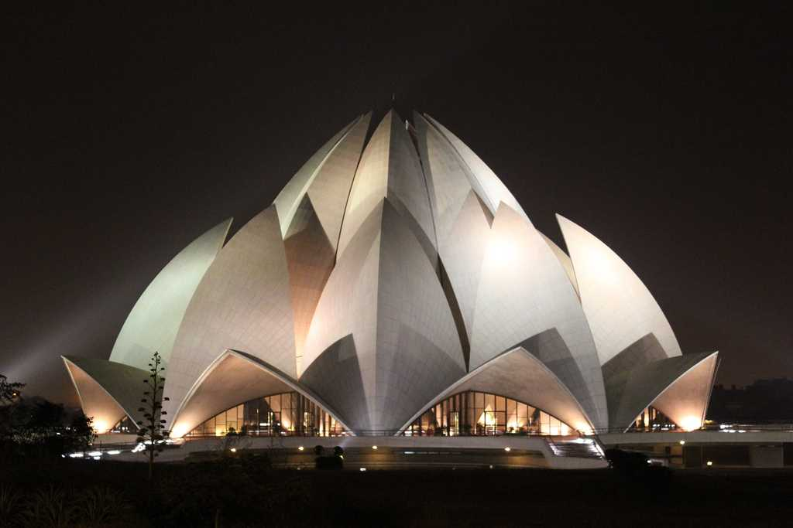
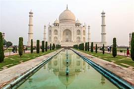

Wel come to Delhi

India Gate, Delhi OverviewThe All India War Memorial, popularly known as the India Gate, Weather : 35 - 45°C Label : Top Attraction Tags : Monument Timings : All time Time Required : 1-2 hours Entry Fee : No entry fee |

Lotus TempleLocated in the national capital of New Delhi, the Lotus Temple is an Weather : 35 - 45°C Label : Instagram Worthy Time Required : 45 minutes - 1 hour Tags : Temple Timings : All days of the week except Monday: October-March: 9:30 AM - 5:30 PM, Entry Fee : Free |

Qutub MinarQutub Minar is a minaret or a victory tower located in Qutub complex, Label : Instagram Worthy Tags : Monument Timings : 10:00 AM - 5:00 PM. Qutub Minar remains open for tourists all days except Sunday Time Required : 2 to 3 hours Entry Fee : Indians, SAARC and BIMSTEC: INR 40, Foreign tourists: INR 600 Children up to 15 years: Free with valid ID |

The Taj Mahal PalaceThe Taj Mahal Palace is a heritage, five-star, luxury hotel in the Colaba Taj Mahal Agra Timings 5:00 am – 6:30 pm |